Perfil personal
Construye confianza, cercanía, voz y autoridad profesional.
Una guía para construir una presencia profesional clara, transformar conocimiento en contenido y desarrollar relaciones que generen oportunidades.
Las empresas son personas, las marcas son personas, los equipos son personas y los clientes también.
Una marca cobra sentido en la voz, la actitud, la presencia y las relaciones que construyen quienes la integran. LinkedIn vuelve visible esa dimensión humana dentro de un contexto profesional.
No alcanza con estar en LinkedIn: hay que estar bien, con propósito y con sistema.
Construye confianza, cercanía, voz y autoridad profesional.
Ordena la identidad institucional y sostiene la credibilidad corporativa.
Permiten observar conversaciones, aprender y detectar oportunidades.

Las empresas son personas, las marcas son personas, los empleados son personas y los clientes son personas.
Muchas veces hablamos de “la marca” como si fuera algo separado de quienes la integran. Sin embargo, una marca cobra sentido en la voz, la actitud, la presencia y las relaciones que construyen sus personas.
Una empresa no se expresa solamente en un logo, una campaña o un mensaje institucional. También se expresa en sus líderes, sus equipos, sus empleados y en la manera en que esas personas habitan los espacios profesionales.
Ahí es donde LinkedIn adquiere un valor especial: además de ser una plataforma, funciona como un escenario donde la dimensión humana y profesional se vuelve visible. Las personas no solo trabajan en una organización; también la encarnan, la narran, la proyectan y la vuelven más cercana, confiable y creíble.
La identidad de una empresa se vuelve creíble cuando sus personas pueden expresarla, sostenerla y convertirla en vínculos.
Nació para poner en contacto a profesionales entre sí y con empresas. Desde 2016 pertenece a Microsoft e incorporó herramientas de inteligencia artificial en la búsqueda y en distintas funciones del perfil.
La plataforma también permite encontrarse, compartir conocimiento, hacer visible una especialidad y construir relaciones con quienes toman decisiones dentro de una industria.

Aprender a utilizar LinkedIn de manera estratégica para construir presencia profesional, fortalecer redes de contacto, posicionar una PyME o una marca personal y generar oportunidades de negocio, colaboración, talento y visibilidad.
La presentación destaca el potencial de LinkedIn para las relaciones B2B: un perfil bien construido, acompañado por una estrategia de contenido consistente, puede generar consultas, alianzas, clientes y visibilidad sin depender exclusivamente de publicidad paga.
No alcanza con estar en LinkedIn: hay que estar bien, con propósito y con sistema.
El módulo trabaja en simultáneo con la persona que construye su marca profesional y con la empresa que necesita posicionarse y generar oportunidades.
Construye marca personal, expresa una mirada propia, genera cercanía y convierte experiencia en autoridad.
Se posiciona dentro de su sector, ordena su presencia institucional y genera oportunidades de negocio.
Las herramientas son las mismas; lo que cambia es el objetivo, la voz, el tipo de contenido y el modo en que cada perfil participa en la conversación.

Reid Hoffman, cofundador de LinkedIn, definió la plataforma como el mayor directorio profesional del mundo. Para una PyME, el valor no está en aparecer de forma pasiva en ese directorio, sino en utilizarlo activamente para construir relaciones que puedan convertirse en oportunidades concretas.

Representa a una persona. Es el espacio con mayor capacidad para construir confianza, expresar una mirada y generar conversaciones orgánicas.
Representa institucionalmente al negocio y concentra información, cultura, novedades, búsquedas y contenidos corporativos.
Reúnen comunidades alrededor de sectores o intereses y permiten observar conversaciones, aprender y detectar oportunidades.
Se construye mediante el perfil, el contenido, el lenguaje, la experiencia y la interacción. Aporta cercanía, voz, confianza y alcance.
Se expresa en la página, el tono, la identidad visual, los contenidos, la cultura y el posicionamiento. Aporta orden, formalidad, institucionalidad y consistencia.
La marca personal suele abrir puertas y la marca empresa ayuda a sostener la credibilidad. Una PyME no tiene que elegir: necesita combinarlas.
La marca personal es la percepción profesional que construís a través de tu perfil, contenido, lenguaje, experiencia e interacción.
En LinkedIn, las personas conectan con personas antes de conectar con empresas. Aunque una PyME cuente con una página institucional, el perfil del dueño, gerente o referente suele ser el punto de entrada a la conversación.
Ese perfil permite ponerle rostro a la experiencia, explicar decisiones, compartir aprendizajes y construir una relación de confianza que luego se traslada a la empresa.
Además, el contenido personal suele obtener mayor circulación orgánica que una publicación puramente corporativa. Por eso, la presencia de los referentes no compite con la página de la empresa: la impulsa y la humaniza.

Tener un perfil no es lo mismo que tener una estrategia: la diferencia está entre figurar en el directorio y lograr que te encuentren.
El curso recupera una idea de Jan Vermeiren, autor de How to REALLY Use LinkedIn: gran parte de los usuarios está presente, pero no activa su red. Un perfil estratégico no funciona como una ficha estática; trabaja de forma consistente para ser comprendido, recordado y recomendado.
Cada elemento del encabezado debe ayudar a responder rápidamente quién sos, qué hacés, a quién ayudás y por qué vale la pena seguir leyendo.
Presenta la propuesta de valor, el rubro o el servicio principal.
Hace reconocible y accesible a la persona detrás de la experiencia.
Explica qué hacés, para quién y qué resultado o diferencial ofrecés.
Ubicación, empresa, formación, información de contacto y cuentas vinculadas completan el sentido del perfil.
El banner es uno de los espacios más desaprovechados de LinkedIn. Puede comunicar la propuesta de valor, el rubro, el servicio principal, una frase de posicionamiento o una identidad visual coherente con la empresa.
El material recomienda trabajar en 1584 × 396 px. El error habitual es dejar el banner blanco o conservar la portada genérica de LinkedIn: ese espacio equivale a una vidriera gratuita.


El titular aparece debajo del nombre en todo LinkedIn: comentarios, conexiones, búsquedas y publicaciones. Suele ser el primer texto que otra persona lee antes de entrar al perfil.
Un cargo aislado —por ejemplo, “CEO en Mi Empresa SRL”— dice dónde trabajás, pero no explica qué problema resolvés ni por qué alguien debería iniciar una conversación con vos.
Ayudo a PyMEs industriales a reducir tiempos de producción con soluciones de automatización | Metalúrgica Técnica
Especialista en OKRs para quienes quieren resultados visibles y duraderos en su empresa | Fundadora de @okrsbrand


El “Acerca de” no es un currículum: es el primer mensaje que una persona recibe sobre tu forma de trabajar y el valor que ofrecés.

La marca personal es la percepción profesional que construís a través de tu perfil, contenido, lenguaje, experiencia e interacción.
Aporta cercanía, voz, confianza, alcance y conexión humana.
Aporta orden, formalidad, institucionalidad y consistencia.
Debe comunicar tu propuesta de valor, rubro o servicio principal. Tamaño recomendado: 1584 × 396 px.
Rostro visible, expresión accesible y fondo simple. No reemplazarla por el logo de la empresa.
Los 220 caracteres más importantes: explican qué hacés, para quién y con qué resultado.
Cuenta una historia que conecte: problema, propuesta, diferencia, resultado y llamado a la acción.
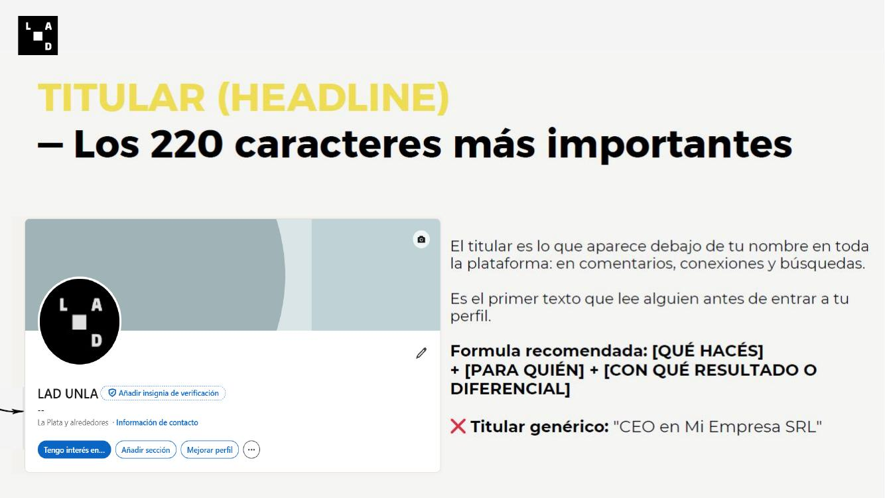
La audiencia de LinkedIn busca aprender, resolver problemas, conectar con referentes y tomar decisiones de negocio.
El contenido que gana en LinkedIn aporta valor real a un profesional.
| Formato | Por qué funciona | Uso recomendado |
|---|---|---|
| Post de texto | Genera conversación y prioriza la idea. | Aprendizajes, opinión, experiencia. |
| Carrusel PDF | Permite enseñar paso a paso. | Procesos, guías, errores comunes. |
| Video nativo | Humaniza y genera cercanía. | Demostraciones y detrás de escena. |
| Artículo | Profundiza y posiciona en buscadores. | Guías extensas y análisis. |
| Caso de cliente | Aporta prueba social concreta. | Problema, proceso y resultado. |
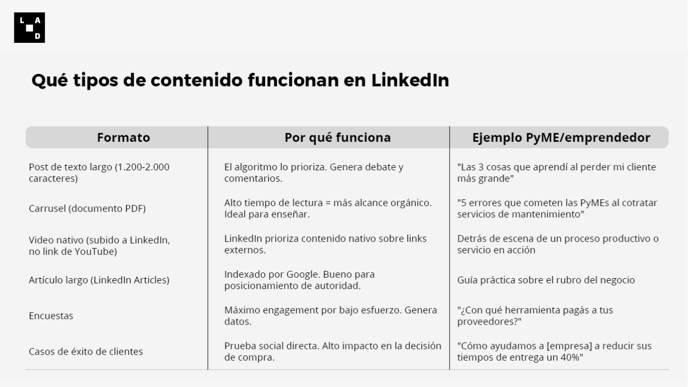
Lo que sabés de tu sector y ayuda a resolver problemas.
Cómo trabajás, cómo producís y qué sucede detrás de escena.
Transformaciones reales, métricas y aprendizajes con clientes.
Tu postura profesional sobre tendencias y decisiones del sector.
Errores, lecciones y evolución personal o empresarial.
Equipo, valores, comunidad y forma de trabajar.
Serie periódica para fidelizar una audiencia y ordenar contenidos alrededor de un tema.
Espacios para observar conversaciones, intercambiar ideas y detectar oportunidades.
Permite publicar búsquedas, atraer talento y reforzar la marca empleadora.
Contenido largo para desarrollar ideas con profundidad y mejorar posicionamiento.
Ayuda a sostener la producción, ordenar el calendario y evitar improvisaciones.
Para difundir charlas, webinars, lanzamientos, clases y encuentros profesionales.
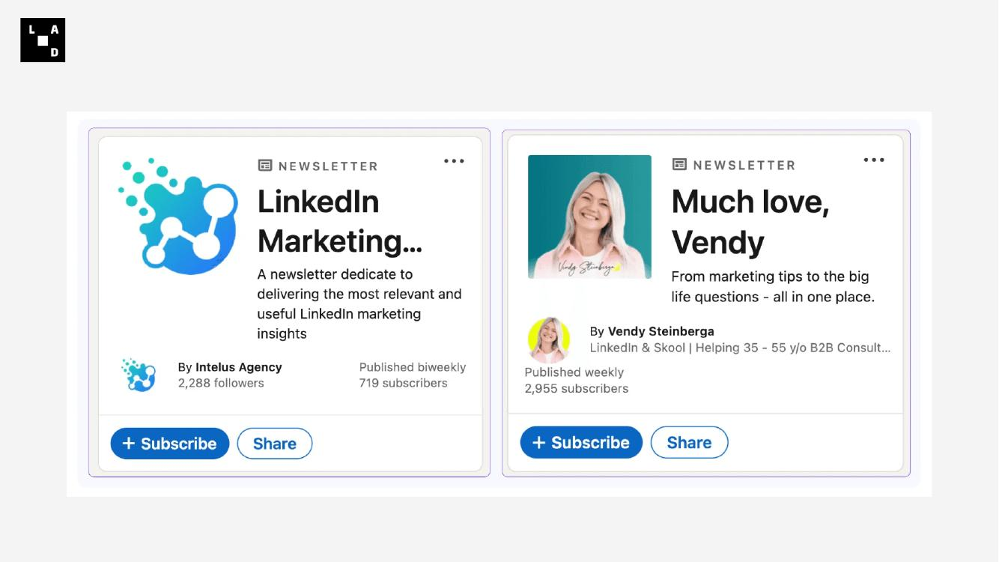
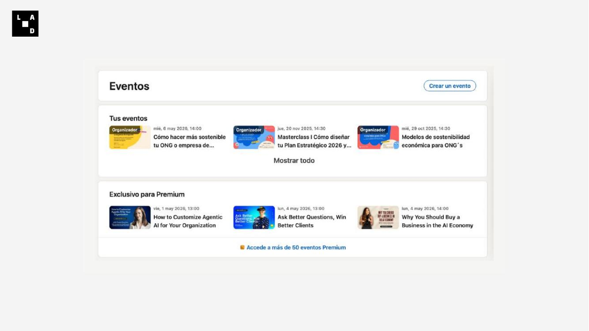
Tener miles de conexiones no significa tener una red de valor. El networking estratégico consiste en construir relaciones profesionales con intención.
Enviar una invitación sin contexto y no volver a conversar.
Dar seguimiento, aportar valor y sostener una conversación genuina.
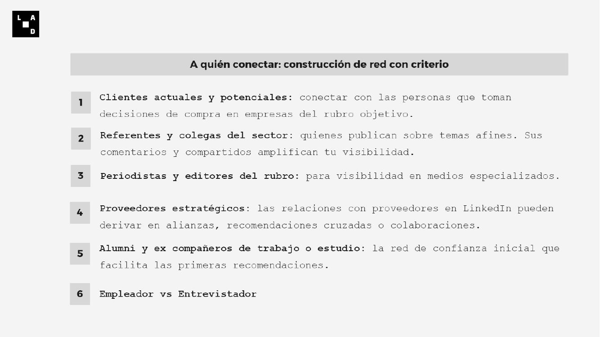
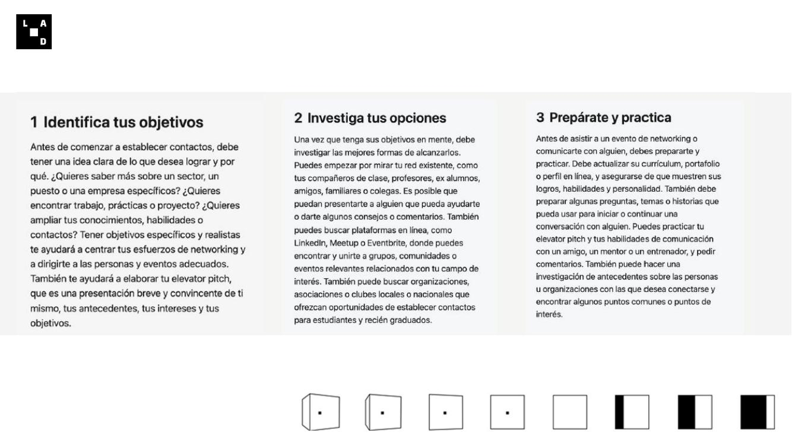
Quince minutos diarios de interacción genuina valen más que una semana completa de publicaciones sin engagement.
La página de empresa es el perfil institucional del negocio. Tiene menos alcance orgánico que el contenido personal, pero sostiene la estrategia corporativa y la credibilidad.
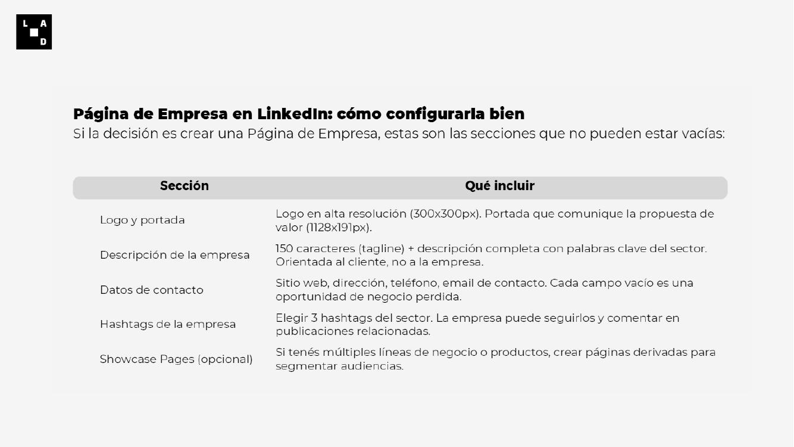
Genera alcance orgánico, confianza y conexión emocional.
Sostiene la identidad institucional y funciona como hub para productos, servicios y equipo.
Los empleados pueden compartir contenido desde sus perfiles personales o crear publicaciones vinculadas a la empresa. Una red activa de personas suele ampliar mucho más el alcance que la página corporativa por sí sola.
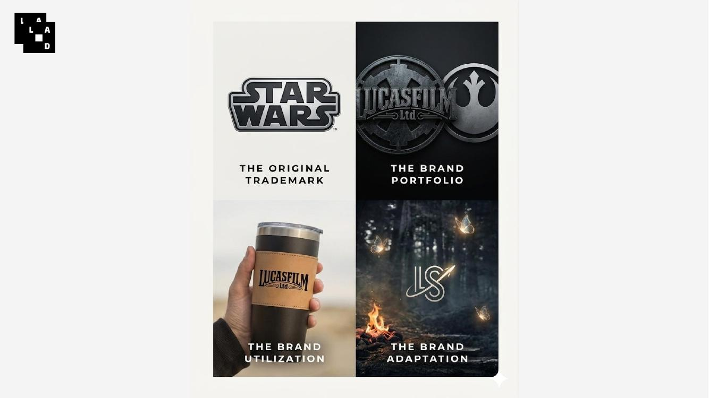
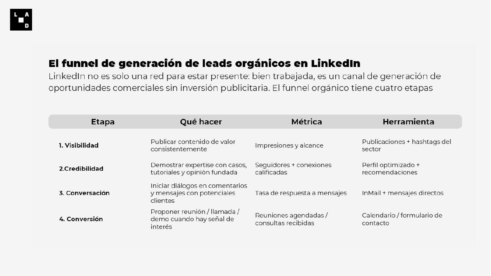
Contenido útil y consistencia.
Casos, resultados y autoridad.
Comentarios, mensajes y seguimiento.
Reuniones, presupuestos y oportunidades.
La publicidad amplifica una estrategia que ya tiene mensaje, contenido y propuesta de valor. No reemplaza la claridad.
Publicaciones patrocinadas para alcance, tráfico o generación de demanda.
Mensajes dirigidos a públicos específicos, con segmentación profesional.
Probá el mensaje y la propuesta antes de pagar por amplificarlos.
| Métrica | Qué muestra | Qué decisión permite tomar |
|---|---|---|
| Impresiones | Cuántas veces se mostró el contenido. | Revisar horario, formato o distribución. |
| Alcance | Personas únicas que lo vieron. | Evaluar expansión de audiencia. |
| Tasa de engagement | Interacciones en relación con el alcance. | Confirmar si el tema y enfoque conectan. |
| Clics en el perfil | Visitas generadas por la publicación. | Medir interés en la propuesta profesional. |
| Solicitudes de conexión | Personas que se acercan por iniciativa propia. | Evaluar atracción y relevancia del perfil. |
| Social Selling Index | Desempeño en marca, red, contenido y relaciones. | Detectar áreas que requieren trabajo. |
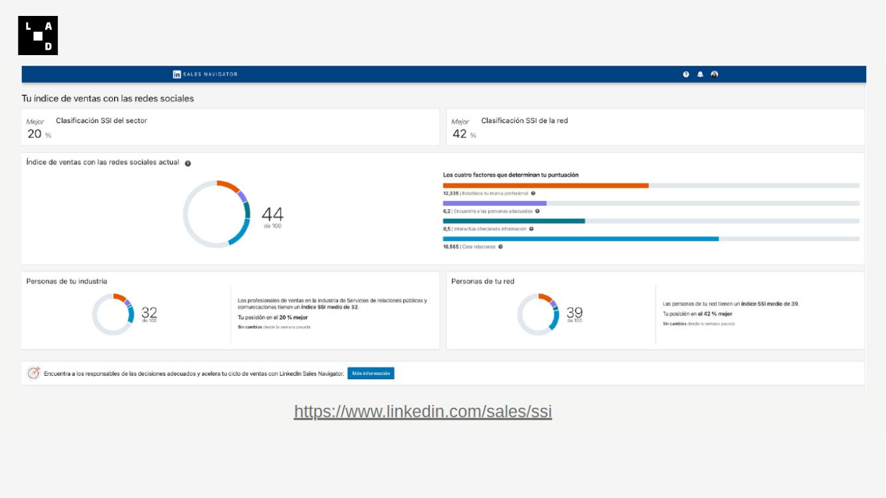
LinkedIn no genera resultados de la noche a la mañana. Es una plataforma de mediano y largo plazo donde la consistencia gana a la intensidad.
El tiempo en LinkedIn no es gasto: es inversión en reputación, relaciones y oportunidades.
Datos actualizados, titular claro, experiencia bien explicada y coherencia con colegas.
Textos, imágenes, videos y artículos que muestran contexto, relación con el trabajo y valor real.
Comentar, recomendar, apoyar y compartir para construir una red viva.
Planificar, medir, corregir y volver a publicar con aprendizaje acumulado.
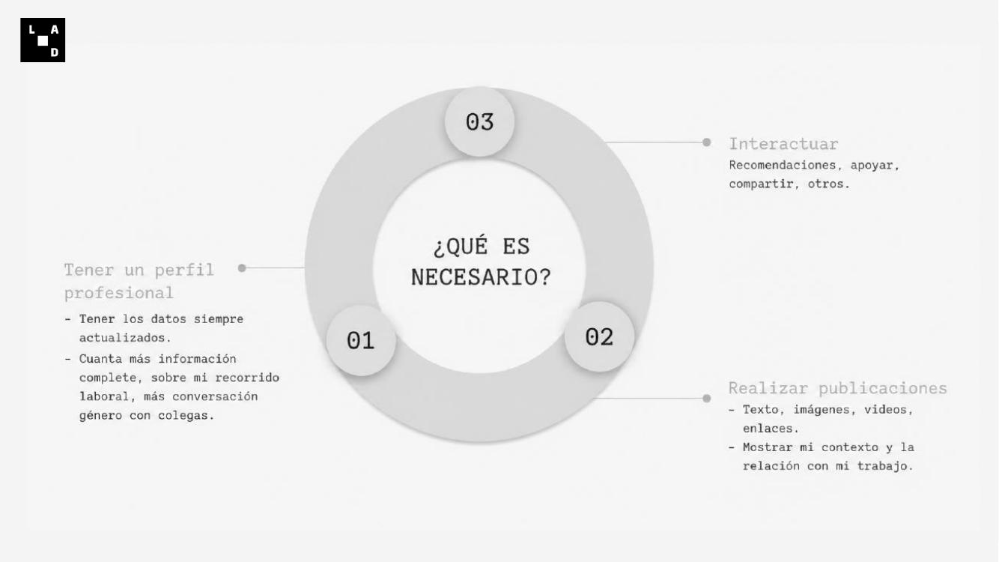
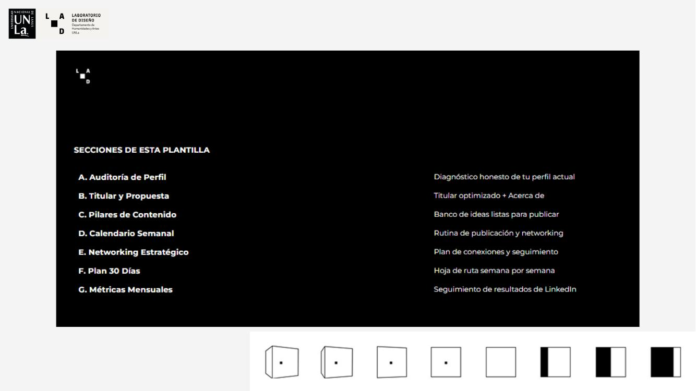
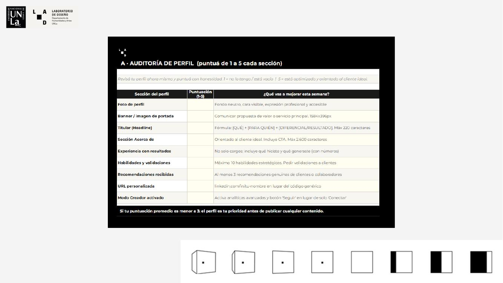
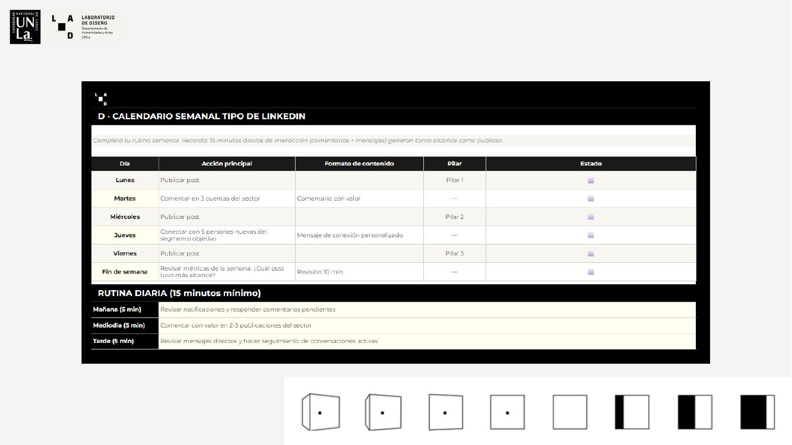
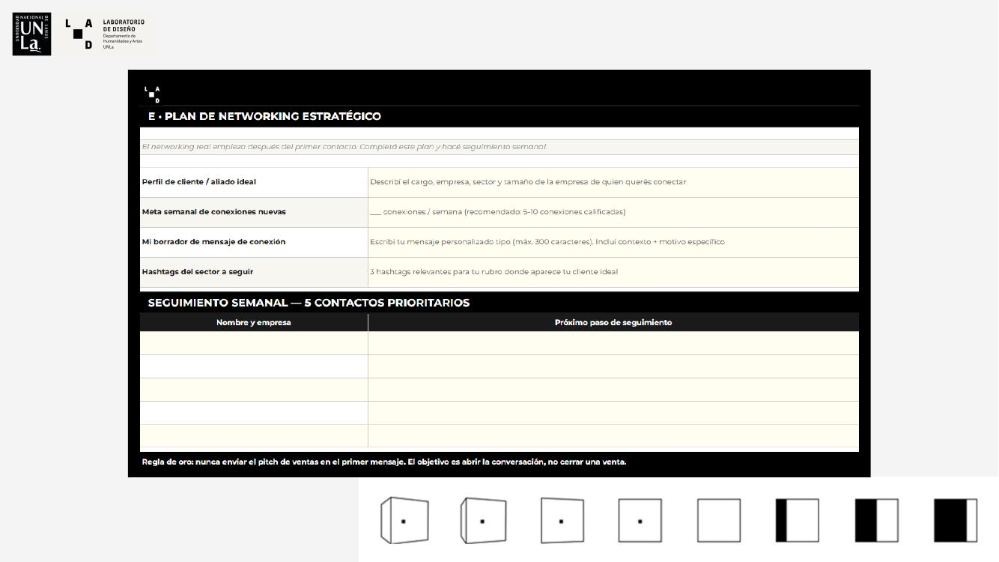
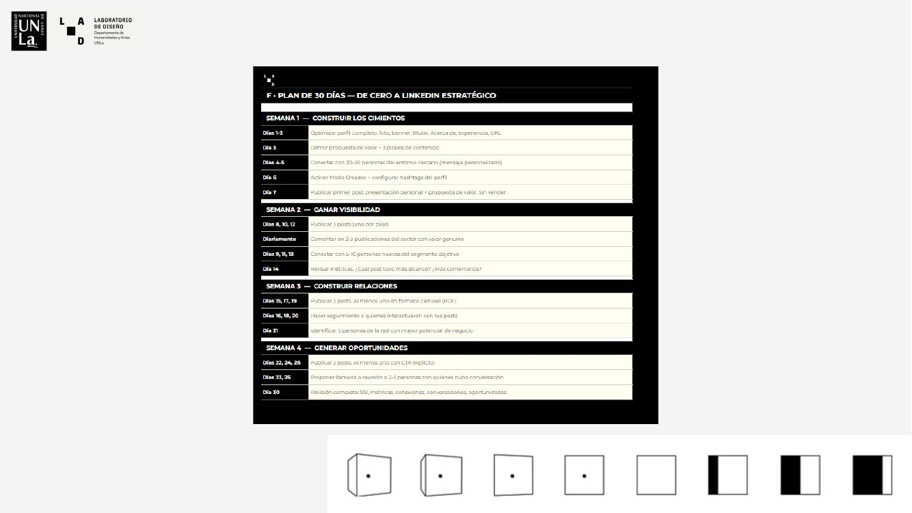
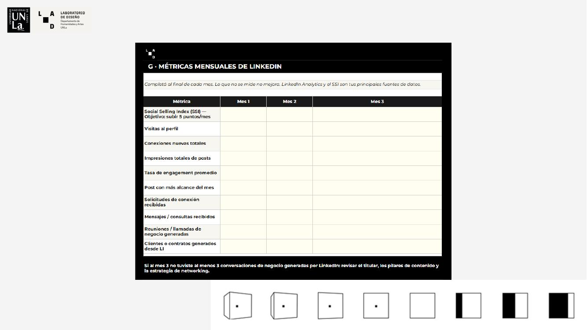
No se trata solo de tener un perfil abierto. Se trata de construir una presencia profesional coherente.